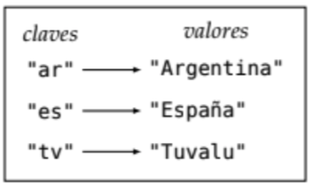

saludo = "Hola"
despedida = "Chau"
print(saludo + despedida)HolaChauUna secuencia es una serie de elementos ordenados que se suceden unos a otros.
Una secuencia en Python es un grupo de elementos con una organización interna, que se alojan de manera contigua en memoria.
Las secuencias son tipos de datos que pueden ser iterados, y que tienen un orden definido. Las secuencias más comunes son los rangos, las cadenas de caracteres, las listas y las tuplas. En este capítulo vamos a ver las características de cada una de ellas y cómo podemos manipularlas.
Los rangos ya los hemos visto antes, pero lo que no habíamos comentado es que son secuencias. Los rangos representan específicamente una secuencia de números inmutable.
Los rangos se definen con la función range(), que recibe como parámetros el inicio, el fin y el paso. El inicio es opcional y por defecto es 0, el paso también es opcional y por defecto es 1.
Para más información de los rangos, ver la unidad 3.
Un string es un tipo de secuencia que sólo admite caracteres como elementos. Los strings son inmutables, es decir, no se pueden modificar una vez creados.
Internamente, cada uno de los caracteres se almacenará de forma contigua en memoria. Es por esto que podemos acceder a cada uno de los caracteres de un string a través de su índice haciendo uso de [].
| Índice | 0 | 1 | 2 | 3 | 4 | 5 | 6 | 7 | 8 | 9 |
|---|---|---|---|---|---|---|---|---|---|---|
| Letra | H | o | l | a | M | u | n | d | o |
Hasta ahora, vimos que:
+:saludo = "Hola"
despedida = "Chau"
print(saludo + despedida)HolaChau[]:saludo = "Hola Mundo"
print(saludo[0:4])
print(saludo[5])Hola
MPodemos agregar también que:
saludo = "Hola"
print(saludo * 3)HolaHolaHolaAdicional a esas 3 operaciones, las cadenas de caracteres tienen una gran cantidad de métodos que nos permiten manipularlas. Veamos algunos de ellos.
Todos los métodos de las cadenas de caracteres devuelven una nueva cadena de caracteres o un valor, y no modifican la cadena original (ya que las cadenas de caracteres son inmutables).
Se puede averiguar la cantidad de caracteres que conforman una cadena utilizando la función predefinida len():
print(len("Pensamiento Computacional"))25Existe también una cadena especial, la cadena vacía (ya la hemos visto antes), que es la cadena que no contiene ningún caracter entre las comillas. La longitud de la cadena vacía es 0.
Es interesante notar lo siguiente: si tenemos una cadena de caracteres de longitud n, los índices de la cadena van desde 0 hasta n-1. Esto es porque el índice n no existe, ya que el primer índice es 0 y el último es n-1.
Veámoslo con un ejemplo: tenemos el caracter Hola.
| Índice | 0 | 1 | 2 | 3 |
|---|---|---|---|---|
| Letra | H | o | l | a |
La longitud de la cadena es 4, pero el último índice es 3. Si intentamos acceder al índice 4, nos dará un error:
saludo = "Hola"
print(saludo[4])IndexError: string index out of rangeLo que nos indica el error es que el índice está fuera del rango de la cadena. Esto es porque el índice 4 no existe, ya que el último índice es 3. El largo de la cadena es 4, y el último índice disponible es 4-1=3.
0 y len(s) - 1) son los caracteres de la cadena del primero al último.-len(s) y -1) proveen una notación que hace más fácil indicar cuál es el último caracter de la cadena: s[-1] es el último caracter, s[-2] es el penúltimo, y así sucesivamente.saludo = "Hola"
print(saludo[-1])
print(saludo[-2])
print(saludo[-3])
print(saludo[-4])a
l
o
HAdemás, el uso de índices negativos también es válido para slices:
saludo = "Hola"
print(saludo[-3:-1])olAl usar índices negativos, es importante no salirse del rango de los índices permitidos.
Dijimos que los strings son secuencias, y por lo tanto podemos iterar sobre ellos. Esto significa que podemos recorrerlos con un ciclo for:
saludo = "Hola Mundo"
for caracter in saludo:
print(caracter)H
o
l
a
M
u
n
d
oSi bien esto ya lo habíamos nombrado en la sección anterior como una posibilidad, ahora sabemos por qué: todas las secuencias son iterables, y por lo tanto, podemos recorrerlas.
El operador in nos permite saber si una subcadena se encuentra dentro de otra cadena. En la guía de la unidad 3 te pedimos que investigues acerca del operador in y not in para el ejercicio de vocales y consonantes.
a in b es una expresión (¿qué era una expresión?, repasar de ser necesario la unidad 3) que devuelve True si a es una subcadena de b, y False en caso contrario.
print( "Hola" in "Hola Mundo")TrueAl ser una expresión booleana, se puede usar como condición tanto de un if como de un while:
if "Hola" in "Hola Mundo":
print("Se encontró una subcadena!")Se encontró una subcadena!Ejercicio
1. Investigar, para un string dado \(s\), cuál es el resultado del slices[:]
2. Investigar, para un string dado \(s\), cuál es el resultado del slices[j:]con \(j\) un número entero negativo.
Las cadenas son inmutables. Esto significa que no se pueden modificar una vez creadas. Por ejemplo, si queremos cambiar un caracter de una cadena, no podemos hacerlo:
saludo = "Hola Mundo"
saludo[0] = "h"TypeError: 'str' object does not support item assignmentSi queremos realizar una modificación sobre una cadena, lo que tenemos que hacer es crear una nueva cadena con la modificación que queremos:
saludo = "Hola Mundo"
saludo = "h" + saludo[1:]
print(saludo)hola MundoLas cadenas de caracteres tienen una gran cantidad de métodos que nos permiten manipularlas. Algunos ya los vimos, como len(), in y not in. Veamos otros.
Te recomendamos que te animes a probar estas funciones, para ver qué hacen y terminar de entenderlas.
| Método | Descripción | Ejemplo |
|---|---|---|
count(subcadena) |
Devuelve la cantidad de veces que aparece la subcadena en la cadena | "Hola mundo".count("o") devuelve 2 |
find(subcadena) |
Devuelve el índice de la primera aparición de la subcadena en la cadena, o -1 si no se encuentra. Cada vez que se llama, devuelve la primer aparición. Puede recibir un parámetro adicional para buscar a partir de una posición particular. |
"Hola mundo".find("mundo") devuelve 5."Hola mundo".find("Hola",6) devuelve -1. |
upper() |
Devuelve una copia de la cadena con todos los caracteres en mayúscula | "Hola mundo".upper() devuelve "HOLA MUNDO" |
lower() |
Devuelve una copia de la cadena con todos los caracteres en minúscula | "Hola mundo".lower() devuelve "hola mundo" |
replace(subcadena1, subcadena2) |
Devuelve una copia de la cadena reemplazando todas las apariciones de la subcadena1 por la subcadena2 | "Hola mundo".replace("mundo", "amigos") devuelve "Hola amigos" |
split() |
Devuelve una lista de subcadenas separando la cadena por los espacios en blanco | "Hola mundo ".split() devuelve ["Hola", "mundo"] |
split(separador) |
Devuelve una lista de subcadenas separando la cadena por el separador | "Hola, mundo".split(", ") devuelve ["Hola", "mundo"] |
isdigit() |
Devuelve True si todos los caracteres de la cadena son dígitos, False en caso contrario |
"123".isdigit() devuelve True |
isalpha() |
Devuelve True si todos los caracteres de la cadena son letras, False en caso contrario |
"Hola".isalpha() devuelve True |
index(subcadena) |
Devuelve el índice de la primera aparición de la subcadena en la cadena, o produce un error si no se encuentra | "Hola mundo".index("mundo") devuelve 5 |
Las tuplas son una secuencia de elementos inmutable. Esto significa que no se pueden modificar una vez creadas. En Python, el tipo de dato asociado a las tuplas se llama tuple y se definen con paréntesis ():
tupla = (1, 2, 3)Las tuplas pueden tener elementos de cualquier tipo, es decir, pueden ser heterogéneas. Por ejemplo, podemos tener una tupla con un número, un string y un booleano:
tupla = (1, "Hola", True)Una tupla de un sólo elemento (unitaria) debe definirse de la siguiente manera:
tupla = (1,)La coma al final es necesaria para diferenciar una tupla de un número entre paréntesis (1).
Ejemplos de tuplas podrían ser:
(1, 1, 2020)(nombre, edad, dni): ("Carla", 30, 12345678)Incluso es posible anidar tuplas, como por ejemplo guardar, para una persona, la fecha de nacimiento: ("Carla", 30, 12345678, (1, 1, 1990))
Como las tuplas son secuencias, al igual que las cadenas, podemos utilizar la misma notación de índices para obtener cada uno de sus elementos y, de la misma forma que las cadenas, los elementos comienzan a enumerarse en su posición desde el 0:
fecha = (1, 12, 2020)
print(fecha[0])1También podemos usar la notación de rangos, o slices, para obtener subconjuntos de la tupla. Esto es algo típico de las secuencias:
fecha = (1, 12, 2020)
print(fecha[0:2])(1, 12)Al igual que con las cadenas, las componentes de las tuplas no pueden ser modificadas. Es decir, no puedo cambiar los valores de una tupla una vez creada:
fecha = (1, 12, 2020)
fecha[0] = 2TypeError: 'tuple' object does not support item assignmentLa longitud de una tupla se puede obtener con la función predefinida len(), que devuelve la cantidad de elementos o componentes que tiene esa tupla:
fecha = (1, 12, 2020)
print(len(fecha))3Una tupla vacía es una tupla que no tiene elementos: (). La longitud de una tupla vacía es 0.
Ejercicio Calcular la longitud de la tupla anidada
("Carla", 30, 12345678, (1, 1, 1990)). ¿Cuántos elementos tiene?
Si a una variable se le asigna una secuencia de valores separados por comas, el valor de esa variable será la tupla formada por esos valores. Ejemplo:
a = 1
b = 2
c = 3
d = a, b, c
print(d)(1, 2, 3)A esto se le llama empaquetado.
De forma similar, si se tiene una tupla de largo \(k\), se puede asignar cada uno de los elementos de la tupla a \(k\) variables distintas. Esto se llama desempaquetado.
d = (1, 2, 3)
a, b, c = d
print(a)
print(b)
print(c)1
2
3Si estamos desempaquetando una tupla de largo \(k\), pero lo hacemos en una cantidad de variables menor a \(k\), se producirá un error.
d = (1, 2, 3)
a, b = dObtendremos:
ValueError: too many values to unpack
o
ValueError: not enough values to unpackLas listas, al igual que las tuplas, también pueden usarse para modelar datos compuestos, pero cuya cantidad y valor varían a lo largo del tiempo. Son secuencias mutables, y vienen dotadas de una variedad de operaciones muy útiles.
La notación para lista es una secuencia de valores entre corchetes y separados por comas.
lista = [1, 2, 3]
lista_vacia = []La longitud de una lista se puede obtener con la función predefinida len(), que devuelve la cantidad de elementos que tiene esa lista:
lista = [1, 2, 3]
print(len(lista))3De la misma forma que venimos haciendo con las cadenas y las tuplas, podremos acceder a los elementos de una lista a través de su índice, slicear y recorrerla con un ciclo for.
lista = [1, 2, 3]
print(lista[0])1lista = ["Civil", "Informática", "Química", "Industrial"]
print(lista[1:3])['Informática', 'Química']lista = ["Civil", "Informática", "Química", "Industrial"]
for elemento in lista:
print(elemento)Civil
Informática
Química
IndustrialA diferencia de las tuplas, las listas son mutables. Esto significa que podemos modificar sus elementos una vez creadas.
lista = [1, 2, 3]
lista[0] = 4
print(lista)[4, 2, 3]append():lista = [1, 2, 3]
lista.append(4)
print(lista)[1, 2, 3, 4]insert():lista = [1, 2, 3]
lista.insert(0, 4)
print(lista)[4, 1, 2, 3]El método ingresa el número 4 en la posición 0 de la lista, y desplaza el resto de los elementos hacia la derecha.
lista = [1, 2, 3]
lista.insert(1, 3)
print(lista)[1, 3, 2, 3]El método ingresa el número 3 en la posición 1 de la lista, y desplaza el resto de los elementos hacia la derecha.
Las listas no controlan si se insertan elementos repetidos, por lo que si queremos exigir unicidad, debemos hacerlo mediante otras herramientas en nuestro código.
remove():lista = [1, 2, 3]
lista.remove(2)
print(lista)[1, 3]Remove busca el elemento 2 en la lista y lo elimina. Si el elemento no existe, se produce un error.
Si el valor está repetido, se eliminará la primera aparición del elemento, empezando por la izquierda.
lista = [1, 2, 3, 2]
lista.remove(2)
print(lista)[1, 3, 2]pop():lista = [1, 2, 3]
lista.pop()
print(lista)[1, 2]El método pop() devuelve el elemento que se eliminó de la lista. Si la lista está vacía, se produce un error.
lista = [1, 2, 3]
elemento = lista.pop()
print(elemento)3pop() con un índice:lista = [1, 2, 3]
lista.pop(1)
print(lista)[1, 3]Al igual que antes, el método pop() devuelve el elemento que se eliminó de la lista. Si la lista está vacía, se produce un error.
a = [1,2,3,4]
b = a
a.pop()
print(b)[1, 2, 3]Se dice que b es una referencia a a. Esto significa que b no es una copia de a, sino que es a misma. Por lo tanto, si modificamos a, también modificamos b.
Una forma de crear una copia de una lista es usando el método copy():
a = [1,2,3,4]
b = a.copy()
a.pop()
print(b)[1, 2, 3, 4]in:lista = [1, 2, 3]
print(2 in lista)TrueComo vemos, el operador in es válido para todas las secuencias, incluyendo tuplas y cadenas.
index():lista = ["a", "b", "t", "z"]
print(lista.index("t"))2Si el valor no se encuentra en la lista, se produce un error.
Si el valor se encuentra repetido, se devuelve la posición de la primera aparición del elemento, empezando por la izquierda.
Las listas son secuencias, y por lo tanto podemos iterar sobre ellas. Esto significa que podemos recorrerlas con un ciclo for:
lista = [1, 2, 3]
for elemento in lista:
print(elemento)1
2
3Esta forma de recorrer elementos usando for es utilizable con todos los tipos de secuencias.
Nos puede interesar que los elementos de una lista estén ordenados según algún criterio. Python provee dos operaciones para obtener una lista ordenada a partir de la desordenada.
sorted(s) devuelve una lista ordenada con los elementos de la secuencia s. La secuencia s no se modifica.lista = [3, 1, 2]
lista_nueva = sorted(lista)
print(lista)
print(lista_nueva)[3, 1, 2]
[1, 2, 3]s.sort() ordena la lista s en el lugar. Es decir, modifica la lista s y no devuelve nada.lista = [3, 1, 2]
lista.sort()
print(lista)[1, 2, 3]Tanto el método sort() como el método sorted() ordenan la lista en orden ascendente. Si queremos ordenarla en orden descendente, podemos usar el parámetro reverse:
lista = [3, 1, 2]
lista.sort(reverse=True)
print(lista)[3, 2, 1]Existe un método reverse (no disponible en todos los ambientes de codeo) que invierte la lista sin ordenarla. Una forma de reemplazarlo es usando slices, como ya vimos: lista[::-1].
Todos los elementos de la secuencia deben ser comparables entre sí. Si no lo son, se producirá un error. Por ejemplo, no se puede ordenar una lista que contenga números y strings.
Al ordenar, las letras en minúscula no valen lo mismo que las letras en mayúscula. Si queremos ordenar “hola” y “HOLA” (por ejemplo), tenemos que compararlas convirtiendo todo a minúscula o todo a mayúscula.
De lo contrario, se ordena poniendo las mayúsculas primero y luego las minúsculas. Es decir, para una lista con los valores ["hola", "HOLA"], el ordenamiento será ["HOLA", "hola"].
¿Existe una forma mejor de hacerlo? Sí. Usando keys de ordenamiento:
lista = ["hola", "HOLA"]
lista.sort(key=str.lower)
print(lista)['hola', 'HOLA']Lo importante de momento es que sepas que existe esta forma de ordenar. A key se le puede pasar una función que se va a aplicar a cada elemento de la lista antes de ordenar. En este caso, la función str.lower convierte todo a minúscula antes de intentar ordenar.
Las listas también puede estar anidadas, es decir, una lista puede contener a otras listas. Por ejemplo, podemos tener una lista de listas de números:
valores = [[1, 2, 3], [4, 5, 6], [7, 8, 9]]Aquí \(valores\) es una lista que contiene 3 elementos, que a su vez son también listas. Entonces, valores[0] sería la lista [1,2,3]. Si quisiéramos, por ejemplo, acceder al número 2 de dicha lista, tendríamos que volver a acceder al índice 1 de la lista valores[0]:
valores = [[1, 2, 3], [4, 5, 6], [7, 8, 9]]
numero = valores[0][1]
print(numero)2Este concepto de listas anidadas se puede generalizar a cualquier secuencia anidada. Por ejemplo, una tupla de tuplas, o una lista de tuplas, o una tupla de listas, etc.
tupla = ((1, 2, 3), (4, 5, 6), (7, 8, 9))
numero = tupla[1][2]
print(numero)6lista = [(1, 2, 3), (4, 5, 6), (7, 8, 9)]
numero = lista[2][0]
print(numero)7tupla = ([1, 2, 3], [4, 5, 6], [7, 8, 9])
numero = tupla[0][1]
print(numero)2Incluso se puede reemplazar un elemento anidado por otro:
tupla = ([1, 2, 3], [4, 5, 6], [7, 8, 9])
tupla[0][1] = 10
print(tupla)([1, 10, 3], [4, 5, 6], [7, 8, 9])Esto es válido siempre y cuando el elemento a reemplazar esté dentro de una secuencia mutable. En el caso de arriba, estamos cambiando el valor de una lista, que se encuentra dentro de la tupla. La tupla no cambia: sigue teniendo 3 listas guardadas.
Si quisiéramos editar una tupla guardada dentro de una lista, no funcionaría:
lista = [(1, 2, 3), (4, 5, 6), (7, 8, 9)]
lista[0][1] = 10
print(lista)TypeError: 'tuple' object does not support item assignmentLas listas anidadas suelen usarse para representar matrices. Para ello, se puede pensar que cada lista representa una fila de la matriz, y cada elemento de la lista representa un elemento de la fila. Por ejemplo, la matriz:
\[ \begin{bmatrix} 1 & 2 & 3 \\ 4 & 5 & 6 \\ 7 & 8 & 9 \end{bmatrix} \]
se puede representar como la lista de listas:
matriz = [[1, 2, 3], [4, 5, 6], [7, 8, 9]]Escribir una función que reciba una cantidad de filas y una cantidad de columnas y devuelva una matriz de ceros de ese tamaño.
Ejemplo: matrix(2,3) devuelve [[0, 0, 0], [0, 0, 0]]
Ejemplo Dada una lista de tuplas de dos elementos (precio, producto), desempaquetar la lista en dos listas separadas: una con los precios y otra con los productos.
lista = [(100, "Coca Cola"), (200, "Pepsi"), (300, "Sprite")]
precios = []
productos = []
for precio, producto in lista: # Acá estamos desempaquetando: precio, producto
precios.append(precio)
productos.append(producto)
print(precios)
print(productos)[100, 200, 300]
['Coca Cola', 'Pepsi', 'Sprite']Vimos que las cadenas tienen el método split, que nos permite separar una cadena en una lista de subcadenas. Por ejemplo:
cadena = "Esta es una cadena con espacios varios"
lista = cadena.split()
print(lista)['Esta', 'es', 'una', 'cadena', 'con', 'espacios', 'varios']También podemos hacer lo contrario: podemos unir una lista de subcadenas en una cadena usando el método join:
lista = ["Esta", "es", "una", "cadena", "con", "espacios", "varios"]
cadena = " ".join(lista)
print(cadena)Esta es una cadena con espacios variosLa sintaxis del método join es:
<separador>.join(<lista>)El separador es el caracter que se va a usar para unir los elementos de la lista. En el ejemplo, el separador es un espacio " ", pero puede ser cualquier caracter. La lista contiene a las subcadenas que se van a unir.
Tanto las cadenas, como las tuplas y las listas son secuencias, y por lo tanto comparten una serie de operaciones que podemos realizar sobre ellas.
| Operación | Descripción |
|---|---|
x in s |
Devuelve True si el elemento x se encuentra en la secuencia s, False en caso contrario |
s + t |
Concatena las secuencias s y t |
s * n |
Repite la secuencia s n veces |
s[i] |
Devuelve el elemento de la secuencia s en la posición i |
s[i:j:k] |
Devuelve un slice de la secuencia s desde la posición i hasta la posición j (no incluída), con pasos de a k |
len(s) |
Devuelve la cantidad de elementos de la secuencia s |
min(s) |
Devuelve el elemento mínimo de la secuencia s |
max(s) |
Devuelve el elemento máximo de la secuencia s |
sum(s) |
Devuelve la suma de los elementos de la secuencia s |
count(x) |
Devuelve la cantidad de veces que aparece el elemento x en la secuencia s |
index(x) |
Devuelve el índice de la primera aparición del elemento x en la secuencia s |
Te recomendamos que pruebes cada una de estas operaciones con las distintas secuencias que vimos en este capítulo.
Además, es posible crear una lista o tupla a partir de cualquier otra secuencia, usando las funciones list y tuple respectivamente:
lista = list("Hola")
print(lista)['H', 'o', 'l', 'a']tupla = tuple("Hola")
print(tupla)('H', 'o', 'l', 'a')lista = list( (1, 2, 3) ) # Convertimos una tupla en una lista
print(lista)[1, 2, 3]Esta última es particularmente útil cuando necesitamos trabajar con una tupla, pero como son inmutables, la convertimos a lista para manipularla sin problemas.
Ejercicio Escribir una función que le pida al usuario que ingrese números enteros positivos, los vaya agregando a una lista, y que cuando el usuario ingrese un 0, devuelva la lista de números ingresados.
def ingresar_numeros():
numeros = []
numero = int(input("Ingrese un número: "))
while numero != 0:
numeros.append(numero)
numero = int(input("Ingrese un número: "))
return numeros
Ejercicio Escribir una función que cuente la cantidad de letras que tiene una cadena de caracteres, y devuelva su valor.
Luego, usar esa función como key para ordenar la siguiente lista:["Año", "Onomatopeya", "Murcielago", "Arañas", "Messi", "Camiseta"].
def contar_letras(cadena):
return len(cadena)
lista = ["Año", "Onomatopeya", "Murcielago", "Arañas", "Messi", "Camiseta"]
lista.sort(key=contar_letras)
print(lista)['Año', 'Messi', 'Arañas', 'Camiseta', 'Murcielago', 'Onomatopeya']Escribir una función que cuente la cantidad de vocales que tiene una cadena de caracteres, y devuelva su valor. Debe considerar mayúsculas y minúsculas. Pista: podés usar la función para saber si una letra es vocal que hiciste en la unidad 3.
Luego, usar esa función como key para ordenar la siguiente lista: ["Año", "Onomatopeya", "Murcielago", "Arañas", "Messi", "Camiseta"].
La función map aplica una función a cada uno de los elementos de una secuencia, y devuelve una nueva secuencia con los resultados.
def obtener_cuadrado(x):
return x**2
lista = [1, 2, 3, 4]
lista_cuadrados = list(map(obtener_cuadrado, lista))
print(lista_cuadrados)[1, 4, 9, 16]La sintaxis es:
map(<funcion>, <secuencia>)La función map devuelve un objeto de tipo map, por lo que en general lo vamos a convertir a una lista usando list(). Sin embargo, el tipo map es iterable, por lo que podríamos recorrerlo con un ciclo for:
for n in lista_cuadrados:
print(n)1
4
9
16Las funciones a pasar como parámetro a map devuelven valores transformados del elemento original. Lo que hace map es aplicar la función a cada uno de los elementos de la secuencia original.
La función filter aplica una función a cada uno de los elementos de una secuencia, y devuelve una nueva secuencia con los elementos para los cuales la función devuelve True.
def es_par(x):
return x % 2 == 0
lista = [1, 2, 3, 4]
lista_pares = list(filter(es_par, lista))
print(lista_pares)[2, 4]La sintaxis es:
filter(<funcion>, <secuencia>)La función filter devuelve un objeto de tipo filter, por lo que en general lo vamos a convertir a una lista usando list(). Sin embargo, el tipo filter es iterable, por lo que podríamos recorrerlo con un ciclo for:
for n in lista_pares:
print(n)2
4Las funciones a pasar como parámetro a filter devuelven valores booleanos del elemento original. Lo que hace filter es filtrar la secuencia original y quedarse sólo con los valores para los cuales la función devuelve True.
Ejemplo Escribir una función que reciba una lista de números y devuelva una lista con los números positivos de la lista original.
def es_positivo(x):
return x > 0
def quitar_negativos_o_cero(lista):
return list(filter(es_positivo, lista))
lista = [1, -2, 3, -4, 5, 0]
lista_positivos = quitar_negativos_o_cero(lista)
print(lista_positivos)[1, 3, 5]Ejemplo Escribir una función que reciba una lista de nombres y devuelva una lista con los mismos nombres pero con la primer letra en mayúscula.
def capitalizar_nombre(nombre):
return nombre.capitalize()
def capitalizar_lista(lista):
return list(map(capitalizar_nombre, lista))
lista = ["pilar", "barbie", "violeta"]
lista_capitalizada = capitalizar_lista(lista)
print(lista_capitalizada)['Pilar', 'Barbie', 'Violeta']Tanto map como filter son aplicables a cualquiera de las secuencias vistas (rangos, cadena de caracteres, listas, tuplas).
Se está procesando una base de datos para entrenar un modelo de Machine Learning. La base de datos contiene información de personas, y cada persona está representada por una tupla de 2 elementos: nombre, edad.
Escribir una función que reciba una lista de estas tuplas. La función debe devolver la lista ordenada por edad; y filtrada de forma que sólo queden los nombres de las personas mayores de edad (>18). Además, los nombres deben estar en mayúscula.
Ejemplo:
Si se tiene [("sol", 40), ("priscila", 15), ("agostina", 30)]
una vez ejecutada, la función debe devolver: [("AGOSTINA",30), ("SOL",40)]
Un diccionario es una colección de pares clave-valor. Es una estructura de datos que nos permite guardar información de forma organizada, y acceder a ella de forma eficiente. Cada clave está asociada a un valor determinado.

Las claves deben ser únicas, es decir, no puede haber dos claves iguales en un mismo diccionario. Los valores pueden repetirse. Si se asigna un valor a una clave ya existente, se reemplaza el valor anterior.
Podemos acceder a un valor a través de su clave porque las claves son únicas, pero no a la inversa. Es decir, no podemos acceder a una clave a través de su valor, porque los valores pueden repetirse y podría haber varias claves asociadas al mismo valor.
Además, los diccionarios no tienen un orden interno particular. Se consideran entonces iguales dos diccionarios si tienen las mismas claves asociadas a los mismos valores, independientemente del orden en que se hayan agregado.
Al igual que las listas, los diccionarios son mutables. Esto significa que podemos modificar sus elementos una vez creados.
clave de un diccionario: cadenas, enteros tuplas.valores, pueden ser de cualquier tipo: cadenas, enteros, tuplas, listas, otros diccionarios, etc.Para definir un diccionario, se utilizan llaves {} y se separan las claves de los valores con dos puntos :. Cada par clave-valor se separa con comas ,.
dominios = {"ar": "Argentina", "es": "España", "tv": "Tuvalu"}El tipo asociado a los diccionarios es dict:
print(type(dominios))<class 'dict'>Para declararlo vacío y luego ingresar valores, se lo declara como un par de llaves vacías. Luego, haciendo uso de la notación de corchetes [], se le asigna un valor a una clave:
materias = {}
materias["lunes"] = [6103, 7540]
materias["martes"] = [6201]
materias["miércoles"] = [6103, 7540]
materias["jueves"] = []
materias["viernes"] = [6201]En el código de arriba, se está creando una variable materias de tipo dict, y se le están asignando valores a las claves "lunes", "martes", "miércoles", "jueves" y "viernes".
Los valores asociados a cada clave son listas con los códigos de las materias que se dan esos días. El diccionario se ve algo así:
{
"lunes": [6103, 7540],
"martes": [6201],
"miércoles": [6103, 7540],
"jueves": [],
"viernes": [6201]
}Para acceder a los valores de un diccionario, se utiliza la notación de corchetes [] con la clave correspondiente:
cods_lunes = materias["lunes"]
print(cods_lunes)[6103, 7540]Veamos que la clave “lunes” no va a ser igual a la clave “Lunes” o “LUNES”, porque como ya dijimos antes, Python es case sensitive.
Si intentamos acceder a una clave que no existe en el diccionario, se produce un error:
print(materias["sábado"])Traceback (most recent call last):
File "<stdin>", line 1, in <module>
KeyError: 'sábado'
Para evitar tratar de acceder a una clave que no existe, podemos verificar si una clave se encuentra o no en el diccionario haciendo uso del operador in:
if "sábado" in materias:
print(materias["sábado"])
else:
print("No hay clases el sábado")No hay clases el sábadoTambién podemos usar la función get, que recibe una clave ky un valor por omisión v, y devuelve el valor asociado a la clave k, en caso de existir, o el valor v en caso contrario.
print(materias.get("sábado", "Error de clave: sábado"))Error de clave: sábadoprint(materias.get("domingo",[]))[]Como vemos el valor por omisión puede ser de cualquier tipo.
Para iterar sobre las claves de un diccionario, podemos usar un ciclo for:
for dia in materias:
print(f"El {dia} tengo que cursar las materias {materias[dia]}")El lunes tengo que cursar las materias [6103, 7540]
El martes tengo que cursar las materias [6201]
El miércoles tengo que cursar las materias [6103, 7540]
El jueves tengo que cursar las materias []
El viernes tengo que cursar las materias [6201]También podemos obtener las claves del diccionario como una lista usando el método keys():
for dia in materias.keys():
print(f"El {dia} tengo que cursar las materias {materias[dia]}")El lunes tengo que cursar las materias [6103, 7540]
El martes tengo que cursar las materias [6201]
El miércoles tengo que cursar las materias [6103, 7540]
El jueves tengo que cursar las materias []
El viernes tengo que cursar las materias [6201]Para iterar sobre los valores de un diccionario, podemos usar el método values():
for codigos in materias.values():
print(codigos)[6103, 7540]
[6201]
[6103, 7540]
[]
[6201]Nótese que en este último ejemplo, no podemos obtener la clave a partir de los valores. Por eso no imprimimos los días.
Para iterar sobre los pares clave-valor de un diccionario, podemos usar el método items(), que nos devuelve un conjunto de tuplas donde el primer elemento de cada una es una clave y el segundo, su valor asociado (clave,valor):
for tupla in materias.items():
dia = tupla[0]
codigos = tupla[1]
print(f"El {dia} tengo que cursar las materias {codigos}")El lunes tengo que cursar las materias [6103, 7540]
El martes tengo que cursar las materias [6201]
El miércoles tengo que cursar las materias [6103, 7540]
El jueves tengo que cursar las materias []
El viernes tengo que cursar las materias [6201]También podemos desempaquetar las tuplas como vimos previamente:
for dia, codigos in materias.items():
print(f"El {dia} tengo que cursar las materias {codigos}")El lunes tengo que cursar las materias [6103, 7540]
El martes tengo que cursar las materias [6201]
El miércoles tengo que cursar las materias [6103, 7540]
El jueves tengo que cursar las materias []
El viernes tengo que cursar las materias [6201]Como los diccionarios no son secuencias, no tienen orden interno específico, por lo que no podemos obtener porciones de un diccionario usando slices o [:] como hacíamos con otras estructuras de datos.
El mayor beneficio de los diccionarios es que podemos acceder a sus valores de forma eficiente, a través de sus claves.
Si la única funcionalidad que necesitamos de un diccionario es iterarlo, entonces no estamos aprovechando su potencial. En ese caso, es preferible usar una o más listas o tuplas, que es más simple y más eficiente.
Iterar un diccionario es una funcionalidad adicional que nos brinda Python, pero no es su principal uso.
Los diccionarios son muy versátiles. Se puede utilizar un diccionario para, por ejemplo, contar cuántas apariciones de cada palabra hay en un texto, o cuántas apariciones por cada letra.
También se puede usar un diccionario para tener una agenda de contactos, donde la clave es el nombre de la persona y el valor el número de teléfono.
Los diccionarios de Python son implementados usando una estructura de datos llamada hashmap.
Para cada clave, se le calcula un valor numérico llamado hash, que es el que se usa para acceder al valor asociado a esa clave.
Cuando se recibe una clave, se le calcula su hash y se busca en el diccionario el valor asociado a ese hash.
| Operación | Descripción |
|---|---|
d[k] |
Devuelve el valor asociado a la clave k |
d[k] = v |
Asigna el valor v a la clave k. Si la clave no existe, la agrega al diccionario. Si ya existe, le actualiza el valor asociado. |
del d[k] |
Elimina la clave k y su valor asociado del diccionario d |
k in d |
Devuelve True si la clave k se encuentra en el diccionario d, False en caso contrario |
len(d) |
Devuelve la cantidad de pares clave-valor del diccionario d |
d.keys() |
Devuelve una lista con las claves del diccionario d |
d.values() |
Devuelve una lista con los valores del diccionario d |
d.items() |
Devuelve una lista de tuplas con los pares clave-valor del diccionario d |
d.copy() |
Devuelve una copia del diccionario d |
d.pop(k) |
Elimina la clave k y su valor asociado del diccionario d, y devuelve el valor asociado |
d.get(k, v) |
Devuelve el valor asociado a la clave k si la clave existe, o el valor v en caso contrario |
Existen más métodos de diccionarios, pero estos son los más utilizados y los que vamos a ver en la materia. Recomendamos que pruebes cada uno de ellos con los diccionarios que vimos en este capítulo.
Los diccionarios son mutables, por lo que podemos pasarlos como parámetros a funciones y modificarlos dentro de la función.
def agregar_alumno(alumnos, nombre, legajo):
alumnos[nombre] = legajo
alumnos = {}
agregar_alumno(alumnos, "Juan", 1234)
agregar_alumno(alumnos, "María", 5678)
print(alumnos){'Juan': 1234, 'María': 5678}Tenemos algunas operaciones que nos permiten ordenar un diccionario:
| Operación | Descripción |
|---|---|
dict() |
Crea un diccionario vacío |
sorted(d) |
Devuelve una lista ordenada con las claves del diccionario d |
dict(sorted(d.items())) |
Devuelve un diccionario ordenado con las claves del diccionario d |
Si lo que necesitamos es ordenar diccionarios entre sí (por ejemplo, teniendo una lista de diccionarios), vamos a usar el parámetro key de la función sorted:
def obtener_nombre(alumno):
return alumno["nombre"]
alumnos = [
{"nombre": "Priscila", "legajo": 1234},
{"nombre": "Iara", "legajo": 5678},
{"nombre": "Agostina", "legajo": 9012}
]
alumnos_ordenados = sorted(alumnos, key=obtener_nombre)
print(alumnos_ordenados)[{'nombre': 'Agostina', 'legajo': 9012}, {'nombre': 'Iara', 'legajo': 5678}, {'nombre': 'Priscila', 'legajo': 1234}]En el ejemplo de arriba, estamos ordenando una lista de diccionarios por el valor de la clave "nombre".
El parámetro key recibe una función que se va a aplicar a cada elemento de la lista antes de ordenar. En este caso, la función obtener_nombre devuelve el valor de la clave "nombre" de cada diccionario, y es lo que se usa para ordenar.